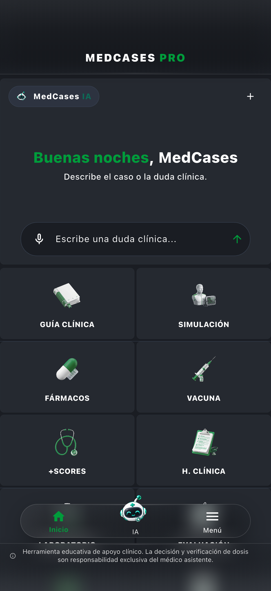

01
IA clínica
Consultas e dúvidas clínicas.
Economize horas toda semana. Transcreva consultas na hora, calcule doses exatas e esclareça dúvidas clínicas com uma IA médica baseada em evidências.
Cadastro no serviço oficial medcasespro.com.
1.000+Mais de 1.000 médicos utilizam a plataforma
177+Disponível em mais de 177 países
Explore as ferramentas apresentadas pelo MedCases Pro.
Consultas e dúvidas clínicas.
Biblioteca de fármacos e cálculo por peso.
Acesso durante os plantões.
Conteúdos para consulta e estudo.
De áudio para texto.
Documentação a partir da voz.
Disponibilidade e limites variam conforme o plano. Consulte as condições no serviço oficial.
Da voz ao texto, da ficha do medicamento à dúvida clínica. Conheça os três pilares do MedCases Pro e veja como usá-los no seu dia a dia.
Explore os recursos gratuitos e conheça o Premium quando precisar ir além.
Grave áudio e transforme a fala em texto para revisar depois. No Premium, tenha transcrições ampliadas e história clínica por voz.
Ver tela real ↗Consulte informações do fármaco e doses de referência. O Premium inclui cálculo por peso e avaliação da função renal para apoiar sua conferência.
Ver tela real ↗Descreva uma dúvida à IA, explore explicações e consulte as referências apresentadas. A avaliação e a decisão clínica continuam com você.
Ver tela real ↗Aprofunde a consulta em guias, escores e referências bibliográficas.
Do estudo à consulta. Explore o MedCases de perto.

Abrir tela em tamanho original ↗
11 capturas reais do aplicativo. Conteúdo preservado no idioma original.
Conheça o plano grátis e o MedCases Premium.
US$ 0
Tudo o que é essencial para conhecer o MedCases e começar a usar hoje.
Funções selecionadas sujeitas a limites de uso no plano gratuito.
30 dias grátis
US$ 14,99 /mês
Preço especial de lançamento durante os primeiros 3 meses.
Depois US$ 19,99/mês.
Cancele quando quiser.
Oferta do site oficial consultada em 20/09/2026. Confira as condições no serviço oficial.
O botão Criar conta abre o caminho para medcasespro.com.
Na área de acesso, siga o fluxo de cadastro do serviço.
Confira os recursos e as condições de acesso disponíveis.
Seleção bibliográfica · Links oficiais verificados em 20/09/2026. As instituições citadas não endossam o MedCases Pro.
Founder & CEO
Promotor de Saúde · Medicina, UCES
Clinical Content & Quality Assurance
Último ano de Medicina
Revisão Médica e Científica
Médica · Residente de Clínica Médica
Um espaço para experiências reais com o MedCases.
Entre na sua conta para enviar sua experiência. A publicação passa por moderação.
Ferramenta educacional de apoio clínico. Não substitui o julgamento profissional.